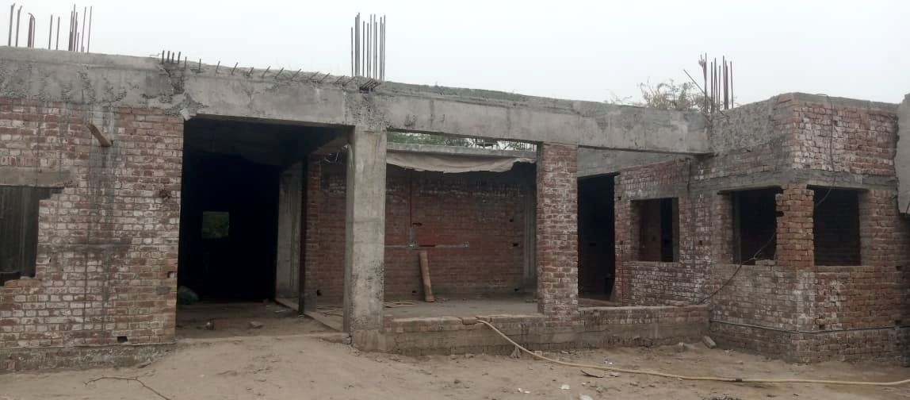

اعتماد کے ساتھ عطیہ کیجیے
2013 سے آپ کے عطیات راشن، پانی، مکانات، تعلیم اور علاج بنتے آ رہے ہیں — نو مسلمین، بیواؤں اور یتیموں کو ترجیح کے ساتھ۔ ہم آپ کی دہلیز سے بھی وصولی کرتے ہیں — نقد یا چیک۔ اللہ آپ سے قبول فرمائے۔
تین آسان طریقے
جو طریقہ آپ کو آسان لگے اختیار کیجیے — ہر راستہ اسی محتاط اور امانت دارانہ تقسیم تک پہنچتا ہے۔
گھر سے وصولی
ہماری ٹیم آپ کے گھر سے زکوٰۃ، صدقات اور عطیات وصول کرتی ہے — نقد یا چیک۔ بس کال یا واٹس ایپ کر کے وقت طے کر لیجیے۔
فون اور واٹس ایپ
0304-8012789 · 0313-4356695 — ہم سے براہِ راست بات کیجیے، ان شاء اللہ اسی دن آپ کے عطیے کا انتظام ہو جائے گا۔
بینک اور ہمارے دفاتر
زکوٰۃ، صدقات اور عطیات تمام بینکوں اور میڈیکل سینٹر کے دفاتر میں وصول کیے جاتے ہیں۔ ہم اکاؤنٹ نمبر آن لائن شائع نہیں کرتے — درست تفصیلات کے لیے پہلے ہم سے رابطہ کیجیے۔
آپ کے ہاتھ سے کسی کی زندگی تک
ایک خاندان کو مہینے بھر کا راشن دیجیے، یا ایسے ہسپتال کا حصہ تعمیر کیجیے جو نسلوں تک شفا بانٹے گا۔
ہر رقم قیمتی ہے
آپ جو بھی دیں — زکوٰۃ، صدقہ یا عطیہ — وہ مستحقین کی خدمت بن جاتا ہے، نو مسلمین، بیواؤں اور یتیموں کو ترجیح کے ساتھ۔
معلوم نہیں کہ کتنی زکوٰۃ واجب ہے؟
ہمارا مفت کیلکولیٹر استعمال کیجیے: اپنی نقدی، سونا، چاندی، کاروباری مال اور واجب الوصول رقوم درج کیجیے، سونے یا چاندی کا نصاب چنیے — اور یہ 2.5% واجب زکوٰۃ نکال دے گا، مکمل طور پر آپ ہی کے آلے پر۔
غیر معمولی صورتوں میں براہِ کرم کسی عالم سے رجوع کیجیے۔ آپ کی زکوٰۃ مستحقین تک پہنچتی ہے — اور ہم اسے آپ کے گھر سے بھی وصول کر سکتے ہیں۔

زیرِ تعمیر · آغاز 2025رفیق میڈیکل سینٹر کی تعمیر میں حصہ لیجیے
چناب نگر کے لیے ایک خیراتی ہسپتال — او پی ڈی، آپریشن تھیٹر، گائنی سینٹر، لیبارٹری، کلر ڈاپلر الٹراساؤنڈ اور میڈیکل سٹور، ایمبولینس سروس کے ساتھ۔ پہلا لینٹر ₨ 1,25,00,000 کی لاگت سے مکمل ہو چکا ہے؛ پورے منصوبے کا تخمینہ تقریباً ₨ 5,00,00,000 ہے۔
عطیہ دینے کو تیار ہیں؟ ہم بس ایک کال کی دوری پر ہیں
کسی بھی نمبر پر کال یا واٹس ایپ کیجیے — ہماری ٹیم آپ کے گھر سے آپ کی زکوٰۃ، صدقہ یا عطیہ وصول کرے گی — نقد یا چیک۔ اللہ آپ کو اجرِ عظیم عطا فرمائے۔